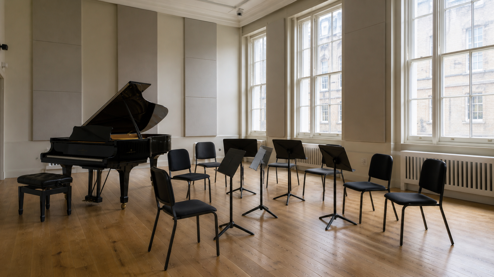

Pella
Culture, education and creative opportunity.
The Pella Foundation
The philanthropic arm of AW Holdings supports artists, institutions and access to creative education. It is deliberately separate from Alex's commercial career.

Culture, education and creative opportunity.
The philanthropic arm of AW Holdings supports artists, institutions and access to creative education. It is deliberately separate from Alex's commercial career.